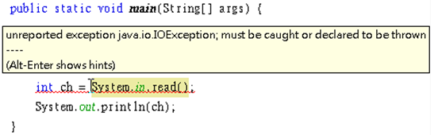
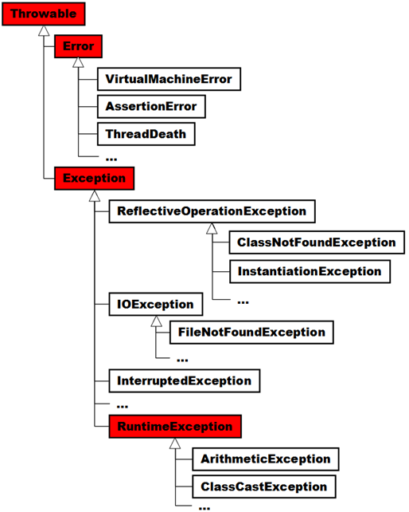
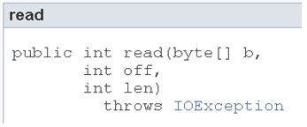
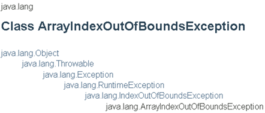
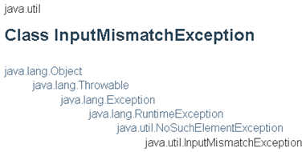
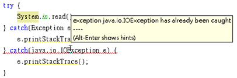
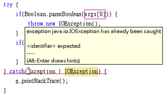

在 使用 try、catch 的Average範例中，雖然沒有撰寫try、catch語句，照樣可以編譯執行，Java初學者往往不理解的是，如果如下撰寫，編譯卻會錯誤？

單純就語法上想解決這個錯誤訊息有兩種方式，一是使用
try、catch包裹System.in.read()，二是在main()方法旁宣告throws java.io.IOException。簡單來說，API設計者在System.in.read()的實作中，某些條件成立時會引發錯誤，而且認為呼叫System.in.read()方法的客戶端有能力處理錯誤，要求編譯器提醒客戶端必須明確處理錯誤，不然不可通過編譯。例如，若如下撰寫就可以通過編譯：try {
int ch = System.in.read();
System.out.println(ch);
} catch(java.io.IOException ex) {
ex.printStackTrace() ;
} Average範例與這邊的例子，程式都有可能發生錯誤，為什麼編譯器單單就只要求這邊的範例，一定要處理錯誤呢？要瞭解這個問題，得先瞭解那些錯誤物件的繼承架構：
首先要瞭解錯誤會被包裝為物件，這些物件都是可拋出的（稍後會介紹
throw語法，就會瞭解如何拋出錯誤物件），因此可拋出的物件都繼承自java.lang.Throwable類別，並可使用try、catch進行捕捉，Throwable定義了取得訊息、堆疊追蹤（Stack Trace）等方法，它有兩個子類別：java.lang.Error與java.lang.Exception。Error與其子類別實例代表嚴重系統錯誤，例如硬體層面錯誤、JVM錯誤或記憶體不足等問題。雖然也可以使用try、catch來處理Error物件，但並不建議，發生嚴重系統錯誤時，Java應用程式本身是無力回復的。舉例來說，若JVM所需記憶體不足，如何撰寫程式要求作業系統給予JVM更多記憶體呢？Error物件拋出時，基本上不用處理，任其傳播至JVM為止，或者是最多留下日誌訊息，供開發者除錯時作為修正程式時的線索。如果拋出了
Throwable物件，而程式中沒有任何catch捕捉到物件，最後由JVM捕捉到的話，那JVM基本處理就是顯示錯誤物件包裹之訊息並中斷程式。程式設計本身的錯誤，建議使用
Exception或其子類別實例來表現，所以通常稱錯誤處理為例外處理（Exception handling）。單就語法與繼承架構上來說，如果某個方法宣告會拋出
Throwable、Exception或子類別實例，但又不屬於Error或java.lang.RuntimeException或其子類別實例，你就必須明確使用try、catch語法加以處理，或者在方法用throws宣告這個方法會拋出例外，否則會編譯失敗。例如，先前呼叫
System.in.read()時，in其實是System的靜態成員，其型態為java.io.InputStream，如果你查詢API文件，可以看到InputStream的read()方法被API設計者宣告為：
IOException是Exception的直接子類別，所以編譯器要求你明確使用語法加以處理。Exception或其子物件，但非屬於RuntimeException或其子物件，稱為受檢例外（Checked Exception），受誰檢查？受編譯器檢查！受檢例外存在之目的，在於API設計者實作某方法時，某些條件成立時會引發錯誤，而且認為呼叫方法的客戶端有能力處理錯誤，要求編譯器提醒客戶端必須明確處理錯誤，不然不可通過編譯，API客戶端無權選擇要不要處理。屬於
RuntimeException衍生出來的類別實例，代表API設計者實作某方法時，某些條件成立時會引發錯誤，而且認為API客戶端應該在呼叫方法前做好檢查，以避免引發錯誤，之所以命名為執行時期例外，是因為編譯器不會強迫一定得在語法上加以處理，亦稱為非受檢例外（Unchecked Exception）。例如使用陣列時，若存取超出索引就會拋出
ArrayIndexOutOfBoundsException，但編譯器並沒有強迫你在語法上加以處理，這是因為ArrayIndexOutOfBoundsException是一種RuntimeException，可以在API文件的開頭找到繼承架構圖：
在 使用
try、catch 的Average範例中，因為InputMismatchException設計為一種RuntimeException：
因此即使實際上還是有可能引發例外，但編譯器並不強迫你得處理例外，你有權利選擇是否使用
try、catch處理，Java對於RuntimeException的態度是，這是一種臭蟲，也就是呼叫方法前沒有做好前置檢查，應該予以修正，使得呼叫方法時不會引發錯誤，如果真要以try、catch處理，建議是日誌或呈現友善訊息，像是 使用 try、catch 的Average2的作法就是個例子。雖然有些小題大作，不過 使用
try、catch 的Average3若要避免出現InputMismatchException，應該是取得使用者的字串輸入之後，檢查是否為數字格式，若是再轉換為int整數，若否則提醒使用者做正確格式輸入，例如：package cc.openhome;
import java.util.Scanner;
public class Average4 {
public static void main(String[] args) {
double sum = 0;
int count = 0;
int number;
while(true) {
number = nextInt();
if(number == 0) {
break;
}
sum += number;
count++;
}
System.out.printf("平均 %.2f%n", sum / count);
}
static Scanner scanner = new Scanner(System.in);
static int nextInt() {
String input = scanner.next();
while(!input.matches("\\d*")) {
System.out.println("請輸入數字");
input = scanner.next();
}
return Integer.parseInt(input);
}
}
除了瞭解
Error與Exception的區別，以及Exception、RuntimeException的分別之外，使用try、catch捕捉例外物件時也要注意，如果父類別例外物件在子類別例外物件前被捕捉，則catch子類別例外物件的區塊將永遠不會被執行，編譯器會檢查出這個錯誤。例如：
要完成這個程式的編譯，必須更改例外物件捕捉的順序。例如：
try { System.in.read();} catch(java.io.IOException e) { e.printStackTrace();} catch(Exception e) { e.printStackTrace();}經常地，你會發現到數個型態的
catch區塊在作相同的事情，這種情況常發生在某些例外都要進行日誌記錄的情況。例如：try { 作一些事...} catch(IOException e) { e.printStackTrace();} catch(InterruptedException e) { e.printStackTrace();} catch(ClassCastException e) { e.printStackTrace();}然而
catch例外後的區塊內容重複了，撰寫時不僅無趣且對維護並沒有幫助。在JDK7開始，可以如下使用多重捕捉（multi-cath）語法：try { 作一些事...} catch(IOException | InterruptedException | ClassCastException e) { e.printStackTrace();}這樣的撰寫方式簡潔許多，
catch區塊會在發生IOException或InterruptedException或ClassCastException時執行，不過仍得注意例外的繼承，catch括號中列出的例外不得有繼承關係，否則會發生編譯錯誤：